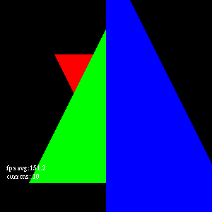

Transformations in OpenGL: Understanding Transforms
#! /usr/bin/env python
from OpenGLContext import testingcontext
BaseContext = testingcontext.getInteractive()
from OpenGL.GL import *
from OpenGL.arrays import vbo
from OpenGLContext.arrays import *
from OpenGL.GL import shaders
from OpenGLContext.scenegraph.basenodes import *
This utility provides transformation-matrix calculation on the CPU
from vrml.vrml97 import transformmatrix
The Theory
OpenGL hardware renders a 2x2x2 cube:
- Z goes from -1 at the far clipping plane to 1 at the near clipping plane
- X goes from -1 at the left to 1 at the right
- Y goes from -1 at the bottom to 1 at the top.
The OpenGL hardware will clip out geometry which does not fall within
the 2x2x2 cube. If you draw outside the cube, the geometry just won't
show up at all. The hardware always draws the same cube, and nothing
you do is going to alter that cube, all you can do is map
your geometry into the cube properly.
How We're Drawing
We are going to start off with an identity matrix for our transformation.
When an identity matrix is multiplied by a coordinate the coordinate is
unchanged. Thus we are going to be drawing in raw "device" or "display"
coordinates.
Note: OpenGL perspective/orthographic routines generally include a
scale of -1 in the Z coordinate.
identity_matrix = array([
[1,0,0,0],
[0,1,0,0],
[0,0,1,0],
[0,0,0,1],
], dtype='f')
Our shader in this scene takes a single matrix uniform (our identity matrix
to start) and multiplies it by the coordinates in our triangles. It sets the
color of each vertex to the colours in the triangles as well. It does *not*
take into account the OpenGLContext built-in navigation, perspective matrix,
and the like. As a result, the scene will be entirely static when displayed.
SHADERS = [
GLSLShader(
source = [ """#version 120
uniform mat4 transform;
attribute vec3 Vertex_position;
attribute vec4 Vertex_color;
varying vec4 baseColor;
void main() {
baseColor = Vertex_color;
gl_Position = transform * vec4(
Vertex_position, 1.0
);
}""" ],
type = 'VERTEX',
),
GLSLShader(
source = [ """#version 120
uniform vec4 color;
varying vec4 baseColor;
void main() {
gl_FragColor = baseColor;
}
"""],
type = 'FRAGMENT',
),
]
What We're Drawing
We will draw four triangles. The first is a cyan triangle which will
*not* appear in the rendering. It is being drawn at Z == -1.05, so it
is behind the clipping region.
cyan_triangle = [
(0,2,-1.05, 0,1,1,.5),
(0,-2,-1.05, 0,1,1,.5),
(2,-2,-1.05, 0,1,1,.5),
]
The small blue triangle will be drawn at Z == -.5
blue_triangle = [
(1,1,.5, 1,0,0,.5),
(-1,1,.5, 1,0,0,.5),
(0,-1,.5, 1,0,0,.5),
]
The green triangle will be drawn at Z == 0.
green_triangle = [
(0,1,0, 0,1,0,.5),
(-1,-1,0, 0,1,0,.5),
(1,-1,0, 0,1,0,.5),
]
The red triangle will be drawn at Z == .5
red_triangle = [
(0,1,-.5, 0,0,1,.5),
(0,-1,-.5, 0,0,1,.5),
(1,-1,-.5, 0,0,1,.5),
]
class TestContext( BaseContext ):
"""Creates a simple vertex shader..."""
@property
def perspective( self ):
return self.perspective_matrices[self.perspective_index]
def OnInit( self ):
We will be using OpenGLContext's automatically compiled/activated
shader objects to make the book-keeping easier for this demo. We are
going to create a single GLSLObject with our m4 Uniform and the Shader
text we defined above.
self.glslObject = GLSLObject(
uniforms = [ FloatUniformm4(name="transform" ) ],
shaders = SHADERS,
)
Our vertex buffer is just the concatenation of the various triangles.
self.coords = ShaderBuffer(
buffer = array(
blue_triangle + green_triangle + red_triangle + cyan_triangle,
dtype='f'
)
)
To make it easier to understand what's going on, we are going to
print out the dot-product of our projection matrix and the coordinate
set (calculated on the CPU). This array is *just* the vertex positions
from the coordinate array.
self.coord_mult = array([
(x,y,z,1)
for (x,y,z) in self.coords.buffer[:,:3]
],dtype='f')
Our indices are currently just an arange, there's no reason to use
the indexed drawing methods here, other than that real code likely will
use those methods.
self.indices = ShaderIndexBuffer(
buffer = array(range(len(self.coords.buffer)),dtype='I')
)
We have two vertex attributes, position and colour
self.attributes = [
ShaderAttribute(
name = 'Vertex_position',
offset = 0,
stride = 4*len(self.coords.buffer[0]),
buffer = self.coords,
isCoord = True,
),
ShaderAttribute(
name = 'Vertex_color',
offset = 3*4,
stride = 4*len(self.coords.buffer[0]),
buffer = self.coords,
isCoord = False,
),
]
Scaling the Scene
Let's apply a few scales to the matrix to get a feel for
how they work. The diagonal values in the matrix map to individual
components, so it is pretty easy to calculate scale matrices.
Our second matrix does a scale of .5 in the x direction.
Our third does a scale of .5 in the Y direction.
self.perspective_matrices = [
# we defined this identity matrix above
identity_matrix,
array([
[.5,0,0,0], # X scale
[0,1,0,0],
[0,0,1,0],
[0,0,0,1],
],'f'),
array([
[1,0,0,0],
[0,.5,0,0], # Y scale
[0,0,1,0],
[0,0,0,1],
],'f'),
]
_Transforming The Scene_
Now let's apply a few translations (moves), we add the values
to the bottom row of the matrix to get the values added to the
coordinates.
self.perspective_matrices.extend([
array([
[1,0,0,0],
[0,1,0,0],
[0,0,1,0],
[.5,0,0,1], # Move right by .5
],'f'),
array([
[1,0,0,0],
[0,1,0,0],
[0,0,1,0],
[0,.5,0,1], # Move up by .5
],'f'),
])

Perspective Transformations
Now let's see what happens to the matrix when we apply a perspective
transformation. A perspective transformation basically takes a
truncated pyramid and maps it into the 2x2x2 cube. The front clipping
plane (the small surface where the pyramid is truncated) maps to the
2x2x2 cube's front-face, and the back clipping plane (the much larger
base) maps to the 2x2x2 cube's back-face. Coordinates closer to the
back clipping plane are thus compressed (seem smaller), while those at
the front clipping plane are close to uncompressed.
The perspective matrix calculation here is doing the calculations
required to give you a particular field of view, near and far clipping
plane. It also includes the z-axis reflection.
aspect = self.getViewPort()
if aspect[1]:
aspect = aspect[0]/aspect[1]
else:
aspect = 1
self.perspective_matrices.extend( [
dot(array([
[1,0,0,0],
[0,1,0,0],
[0,0,-1,0],
[0,0,-1,1],
],'f'),transformmatrix.perspectiveMatrix(
fov*3.14159,
aspect,
.01,
2.01,
inverse=False,
))
for fov in [.5,.6,.7,.8,.9,.95] # we don't go to 1 because then far would clip the geometry
] )
We set up an event handler to call the function to perform the switch.
The handler will increment our index into self.perspective_matrices.
self.perspective_index = 0
self.addEventHandler( "keypress", name="p", function = self.OnPerspective)
def Render( self, mode):
Our code to render the geometry first ignores any non-visible passes
if not mode.visible:
return
Now we calculate our perspective matrix. Since this is pre-calculated
we're just pulling in the value. Normal code would calculate the matrix
from "camera" position and parameters and then pass it into the Uniform.
final_matrix = self.perspective
print('final_matrix:\n%s'%(final_matrix))
print('transformed vertices:\n%s'%( dot( self.coord_mult, final_matrix )))
print('press <p> for the next matrix...')
self.glslObject.getVariable( 'transform' ).value = final_matrix
We begin the actual rendering code, which just binds each component
and then calls the glDraw function.
token = self.glslObject.render( mode )
tokens = []
vbo = self.indices.bind(mode)
try:
for attribute in self.attributes:
token = attribute.render( self.glslObject, mode )
if token:
tokens.append( (attribute, token) )
glDrawElements(
GL_TRIANGLES, len(self.coords.buffer),
GL_UNSIGNED_INT, vbo
)
finally:
for attribute,token in tokens:
attribute.renderPost( self.glslObject, mode, token )
self.glslObject.renderPost( token, mode )
The index-array VBO also needs to be unbound.
vbo.unbind()
Our event handler to choose the next perspective matrix
def OnPerspective( self, event ):
self.perspective_index += 1
self.perspective_index = self.perspective_index%len(self.perspective_matrices)
self.triggerRedraw()
if __name__ == "__main__":
TestContext.ContextMainLoop()
Understanding Transforms